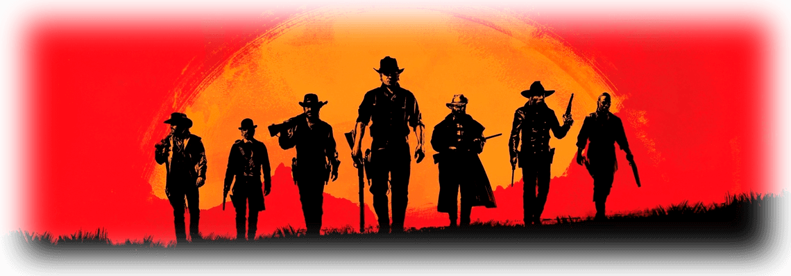

Дата выхода: 5 ноября 2019
Жанр: Action, 3D
Разработчик: Rockstar Games
Издатель: Take-Two Interactive
5 ноября 2019 года на ПК вышла одна из самых долгожданных игр этого года от разработчика Rockstar Games. Red Dead Redemption 2 – это игра в жанре action-adventure и шутер от третьего лица с открытым миром. Поддерживаемые платформы – PlayStation 4 и Xbox One. Разработка велась 8 лет и в ней приняли участие сразу несколько студий Rockstar в разных странах.
Red Dead Redemption 2 – это вестерн, события происходят на Диком Западе в 1899 году. Вам предстоит управлять Артуром Морганом, одним из членов банды Датча ван дер Линде. После неудачного ограбления, ваша шайка скрывается в лесах от федеральных агентов и охотников за головами. Путешествия по огромному и проработанному открытому миру, где все NPC живут своей жизнью и реагируют на все действия игрока – вот что вас ждет. Помимо кампании присутствует и многопользовательский режим с большим количество квестом и различных активностей как в GTA, но в сеттинге Дикого Запада. Охота, рыбалка, скотоводство, грабежи, травничество, добыча золота, драки, пьянки, танцы – в Red Dead Redemption 2 всегда найдется чем заняться.